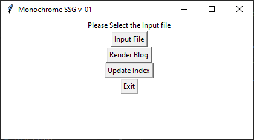
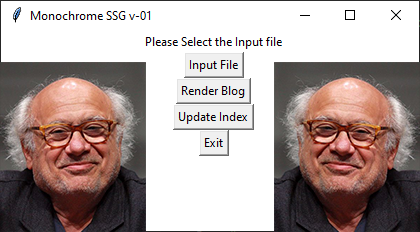

On Building a Static Site Generator with Python
2022-10-22 Tags: python, coding, programming, projectsHow I built a static site generator using Python, why I did and why I probably shouldn't have.
Hello World
First of all, welcome to my blog, christened "Notes from the Slumberground." Is it going to be about classic Russian Literature from the perspective of a laidback gen-Z? Could be one day, when I actually read Dostoevsky, but probably not. It just sounded nice and vaguely literate, a lot like myself, actually.
I don't know what to blog about, or how to do it do it well, so I guess the best place to begin would be to tell you about its inception.
You see, when mummy-boredom and daddy-tech-illiteracy love each other very much, instead of just getting a hobby they both can enjoy together, they arrogantly decide that they want make something that's beyond their current capabilities.
And why adopt a toilet-trained infant-Content-Management-System when they can build a baby-Static-Site-Generator from Python packages? At least then, despite sleepless nights of taking care of the shit-covered baby, they'll get to upload cute photos-Blog-Posts once in a while.
Now that that clunky metaphor is finally over, let's talk about building a static site generator with python...
Monochrome SSG
About
A Static Site-Generator (SSG) is a tool that generates static HTML pages based on raw data and a set of templates. You can focus on the content that goes up on the website, instead of worrying about marking it up according to HTML. Plus, you don't have to worry about manually adding common elements of your website, like the header and footer, to each new page.
Monochrome SSG is a custom-built Python SSG used to generate pages for my personal website and blog. It converts files written in Markdown to HTML based on templates that I created for my website.
It's used to fulfil the "back-end" needs of my website hosted on GitHub Pages. Full notebook available here.
Called "Monochrome" because it was for being built for a website that was rendered using mostly black and white, and a hint of grey. However, before I could finish this script, I added a dark-mode that's got a lovely shade of pink as the highlight colour.
The name stuck due to the argument that the pink is the only "chrome" in the surrounding greyscale. Though it was mostly because I could not think of anything else.
The code was inspired by Jahongir Rahmonov's tutorial.
Python Libraries Used
osdatetimemarkdown2jinja2tkinter
Markdown File Set-Up
The markdown files need to begin with certain YAML style metadata that will provide the SSG the necessary information to style the page.
Each file will begin with the following block of information:
---
page-title: {{Title of the page}}
page-description: {{Description of the page}}
main-class: {{CSS class to be used}}
title: {{Title of the blog post}}
date: {{Date of the blog post}}
tags: {{Tags relating to the blog post}}
thumbnail: {{Thumbnail image}}
summary: {{Summary of the page}}
slug: {{Filepath to the post}}
---
The block must be followed by an empty line.
HTML Template Set-Up
The HTML templates also require the presence variables enclosed between double curly-braces: {{variable}}.
Blog Post HTML file:
<!DOCTYPE html>
<html lang="en">
<head>
<meta charset="UTF-8">
<meta http-equiv="X-UA-Compatible" content="IE=edge">
<meta name="viewport" content="width=device-width, initial-scale=1.0">
<title>Document</title>
</head>
<body>
<h1>{{post.title}}</h1>
<small>{{post.date}}</small>
{{post.content}}
</body>
</html>
Index / Recents HTML file:
<!DOCTYPE html>
<html lang="en">
<head>
<meta charset="UTF-8">
<meta http-equiv="X-UA-Compatible" content="IE=edge">
<meta name="viewport" content="width=device-width, initial-scale=1.0">
<title>Document</title>
</head>
<body>
{% for post in posts %}
<p>
<h2>{{loop.index}}: <a href="/blog/posts/{{ post.slug }}.html">{{post.title}}</a> <small>{{post.date}}</small></h2>
{{post.summary}}
</p>
{% endfor %}
</body>
</html>
Directory Structure
The directory structure that follows allows for drafts to be separated from the content folder, which contains the Markdown files that will be rendered as HTML blog posts in the posts directory.
.
├── drafts
│ ├── crazy-ideas.md
│ └── writers-block.md
├── content
│ ├── 2022-09-10-arson.md
│ └── 2022-19-11-boiled-egg.md
├── posts
│ ├── arson-crime-or-hobby.html
│ └── my-life-as-a-boiled-egg.html
├── template
│ ├── all-posts-template.html
│ |── blog-template.html
| └── recent-posts-template.html
├── all-posts.html # list of all posts of the blog
└── index.html # contains only 5 recent posts in case of my blog
The Code
The following block of code uses tkinter to present a GUI to select the Markdown file that will be rendered as a blog post.
from tkinter import *
from tkinter import filedialog
global input_filename
input_filename = filedialog.askopenfilename(
initialdir= ".",
filetypes= (
("All files", "*.*"),
("Markdown files","*.md"),
("Text files", "*.txt")
)
)
label_file_explorer.configure(text="File Opened: "+input_filename)
Once the input file has been selected, the following code uses markdown2 to parse the Markdown file and and jinja2 as the template engine to render the blog page.
On an unrelated note, it's not just (H/B)ollywood that's obsessed with sequels.
The code is as follows:
import os
from datetime import datetime
from jinja2 import Environment, PackageLoader
from markdown2 import markdown
with open(input_filename, 'r') as file:
parsed_md = markdown(file.read(), extras=['metadata'])
env = Environment(loader=PackageLoader('package', 'templates'))
# seems to work only with a blank package.py file in the project root.
post_detail_template = env.get_template('post-detail.html')
data = {
'content': parsed_md,
'title': parsed_md.metadata['title'],
'date': parsed_md.metadata['date']
}
blog_html_content = post_detail_template.render(post=parsed_md.metadata)
blog_filepath = 'output/posts/{slug}.html'.format(slug=parsed_md.metadata['slug'])
os.makedirs(os.path.dirname(blog_filepath), exist_ok=True)
with open('blog_filepath', 'w') as file:
file.write(blog_html_content)
label_file_explorer.configure(text="Blog Rendered")
Similar code was also used to generate and update the index of all blog posts and the recent posts page:
BLOG = {}
label_file_explorer.configure(text="Updating index...")
for blog_md in os.listdir('content'):
file_path = os.path.join('content', blog_md)
with open(file_path, 'r') as file:
BLOG[blog_md] = markdown(file.read(),extras=['metadata'])
BLOG = {
post: BLOG[post] for post in sorted(
BLOG, key=lambda post: datetime.strptime(
BLOG[post].metadata['date'], '%Y-%m-%d'),
reverse=True
)
}
env = Environment(loader=PackageLoader('monochrome', 'templates'))
all_posts_template = env.get_template('all-posts-template.html')
recent_posts_template = env.get_template('recent-posts-template.html')
index_blog_metadata = [
BLOG[post].metadata for post in BLOG
]
all_posts_html = all_posts_template.render(posts=index_blog_metadata)
recents = []
i=0
while i <5:
recents.append(index_blog_metadata[i])
i = i + 1
recent_posts_html = all_posts_template.render(posts=recents)
with open('output/all.html', 'w') as file:
file.write(all_posts_html)
with open('output/index.html', 'w') as file:
file.write(recent_posts_html)
label_file_explorer.configure(text="Index Updated")
The preceding code-blocks were used to define functions, which were then assigned to buttons in the GUI.
The Ugly GUI
Going back to the metaphor of parenting a nasty child for a second...

I want to do to this what Mr & Mrs Cobblepot did to baby Oswald back in 1992, but I'm holding onto hope that with enough love and support, this might grow into something as handsome as Danny DeVito.

Future Work
A lot of stuff needs to be done to make this more functional and adaptable for more intensive use. Some of the major goals for me right now are as follows:
- Add templates for non-blog pages.
- Add functionality to update templates.
- Add functionality to regenerate pages with new templates.
- Add functionality to import
.ipynbHTML export.
Summation
So, was it worth building an SSG from scratch? Can't really say right now.
There are many amazing SSG's (re: free) out there, used by so many, and what I have built is far from being a game-changer. But as a coding beginner, it did teach me a bunch of stuff about Python that will come in handy.
Plus, it gave me something to blog about.
I'll keep tinkering with it, and maybe there will be something blog-able about it soon.
Goodbye World
For now...